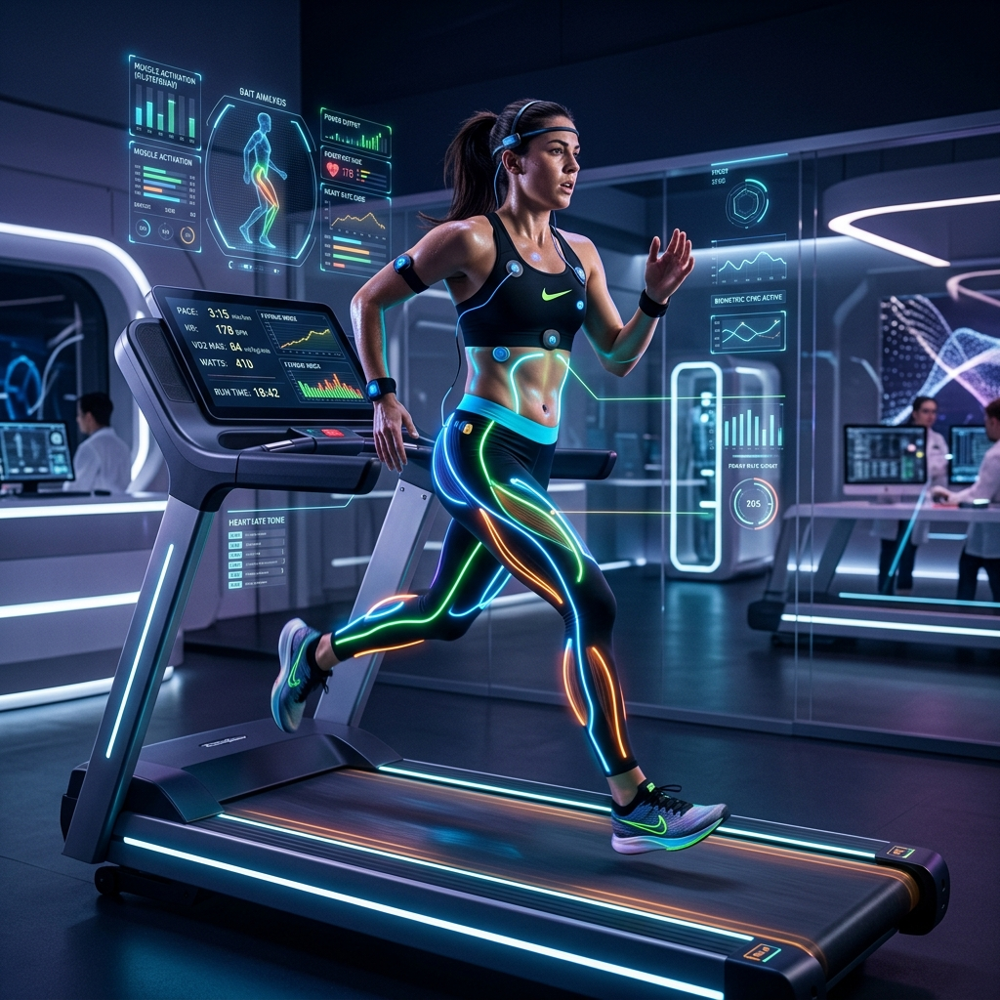

SPORTS
SCIENCE
解锁人类体能的极限 // 2026 竞技白皮书
数据是现代竞技的燃料
超越直觉
现代体育不再仅仅依靠教练的直觉。每一秒的运动、每一次的心跳都转化为TB级的结构化数据。通过机器学习，我们能够精准预测运动员的疲劳临界点，将伤病率降低了 35%。

量化人类功率输出
VO2 Max 最大摄氧量
衡量有氧耐力的黄金指标。通过高海拔训练与间歇性低氧诱导，我们可以持续推高个体的氧气利用上限。
乳酸阈值拐点
精准锁定运动员在无氧状态下的耐受极限。通过数据驱动的强度配置，实现对代谢系统的高效改造。
HRV 心脏律动监测日志
HRV_SONIFICATION_v1.MP3
“这是通过超灵敏电极采集的心脏电信号转化，高频波动代表极佳的恢复状态。”
多维抗疲劳干预矩阵
极低温疗法
在 -110°C 的氮舱中暴露 3 分钟，迅速抑制系统性炎症，加速微损伤修复。
高压氧舱
在 1.5-2.0 个大气压下吸入高纯氧，显著提升血浆含氧量，缩短代谢废物的清除时间。
气动压缩系统
动态梯度加压，模拟淋巴引流过程，减轻大负荷训练后的肢体肿胀感。
赛季体能巅峰预测曲线
超量补偿原则
通过精准的负荷加载与卸载循环，我们能够确保运动员在重大决赛当日正处于生理机能的最顶峰。
全时生理体征监控
睡眠效率
监测深睡与 REM 时长，评估生长激素分泌环境。
实时皮质醇
通过汗液传感器监控压力激素，预防过度训练综合症。
肌糖原水平
无创光谱检测，动态调整中场补给方案。
核心体温
防范热射病，优化在极端环境下的功率输出策略。
精英级短跑动力学拆解
地面接触时间
顶级运动员的触地时间通常小于 0.08 秒。我们在视频中标记了踝关节的触地角度与爆发力输出峰值。
高压力下的心理韧性表现

THE ZONE
心流状态并非偶然。通过脑电图反馈训练，我们可以教会运动员在枪响瞬间进入“绝对专注”模式。
大脑：性能的终极司令部
神经反馈训练
通过实时脑波监测，训练运动员在极高压力下保持冷静。优化决策速度与执行精度。
本体感觉增强
强化身体对空间位置的感知能力。在极不平衡的动态环境下依然保持绝对重心控制。
反应时压缩
通过特定的视觉激发算法，将神经肌肉的传导延迟降低至毫秒级。抢占先机。
宏观营养摄入精准配比
能量动力学
根据训练强度动态调整碳水与脂肪的摄入比例。在耐力阶段侧重脂肪代谢灵活性，在爆发阶段最大化肌糖原填充。
顶级竞技科研实验室
极端环境下的体能适应
高海拔预处理
诱导红细胞生成素增加，提升携氧量。
热暴露适应
通过桑拿与热力运动，优化血浆容量与排汗机制。
湿度耐受
模拟高湿赛场，训练核心体温调节效率。
昼夜节律同步
利用特定光谱干预，快速消除跨时区时差影响。
各地区竞技表现参与度
基数与峰值
数据表明，建立在庞大群众基础上的精英选拔体系，其稳定性远高于传统模式。投资基础科研正成为金牌竞争的新常态。
年度大周期训练模块规划
全维度的天才球员画像
基因组学
ACTN3 爆发力基因筛查。
心理画像
高压下的执行力与心理稳定性。
空间直觉
对战术流动的动态捕捉能力。
生理形态
肢体比例与肌肉纤维构成。
坚毅度
面对挫折的长期自驱动力。
第二层皮肤：传感器技术
智能压缩衣
内置 12 个肌电传感器，实时反馈肌肉发力平衡度。
眼动追踪镜
分析运动员在防守瞬间的视觉搜索模式。优化反应预判。
生化贴片
无损监测排汗中的电解质浓度，精准提示补水时机。
全球顶尖竞技表现中心
耐克运动研究实验室 (NSRL)
拥有全球最大的脚型数据库。专注于通过运动鞋技术突破 2 小时马拉松大关。
红牛运动员表现中心 (APC)
跨学科团队集结。从极限运动到 F1，探索人类感知与勇气的生理边界。
水下重力抵消恢复训练

RECOVERY IS WEAPONRY.
训练只是刺激，恢复才是成长。在水中抵消重力，让关节在无压环境下完成肌肉的超量补偿。
WIN THE
INNER GAME
人类潜能没有终点。只有不断被改写的数据。